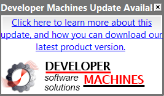
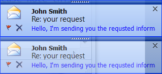

OfficePopupWindow Class Reference
(Qtitan::OfficePopupWindow)OfficePopupWindow class is a realization of a Microsoft Office popup window. Such window is widely used in products of Microsoft Office for showing messages or groups of messages. Typically, a window appears at the bottom right. Just above the desktop task bar. OfficeStyle and RibbonStyle have a property setPopupDecoration() to set the decoration of this window. With this property you can give a look of Microsoft Messanger (MSN) or it allows to decorate the window depending on the style which installed in QApplication. More...
Inherits QWidget.
Public Functions
| OfficePopupWindow ( QWidget * parent ) | |
| virtual | ~OfficePopupWindow () |
| PopupAnimation | animation () const |
| int | animationSpeed () const |
| const QString & | bodyText () const |
| QWidget * | centralWidget () const |
| const QPixmap & | closeButtonPixmap () const |
| int | displayTime () const |
| bool | dragDropEnabled () const |
| QPoint | getPosition () const |
| bool | isTitleCloseButtonVisible () const |
| PopupLocation | location () const |
| void | setAnimation ( PopupAnimation popupAnimation ) |
| void | setAnimationSpeed ( int time ) |
| void | setBodyText ( const QString & text ) |
| void | setCentralWidget ( QWidget * widget ) |
| void | setCloseButtonPixmap ( const QPixmap & pixmap ) |
| void | setDisplayTime ( int time ) |
| void | setDragDropEnabled ( bool enabled ) |
| void | setLocation ( PopupLocation location ) |
| void | setPosition ( const QPoint & pos ) |
| void | setTitleCloseButtonVisible ( bool visible = true ) |
| void | setTitleIcon ( const QIcon & icon ) |
| void | setTitleText ( const QString & text ) |
| void | setTransparency ( qreal transparency ) |
| bool | showPopup () |
| bool | showPopup ( const QPoint & pos ) |
| const QIcon & | titleIcon () const |
| const QString & | titleText () const |
| qreal | transparency () const |
Reimplemented Public Functions
| virtual QSize | sizeHint () const |
- 217 public functions inherited from QWidget
- 13 public functions inherited from QPaintDevice
- 29 public functions inherited from QObject
Public Slots
| void | closePopup () |
Signals
| void | aboutToHide () |
| void | aboutToShow () |
Static Public Members
| void | showPopup ( QWidget * parent, const QIcon & titleIcon, const QString & titleText, const QString & bodyText, bool closeButtonVisible = true, OfficeStyle::OfficePopupDecoration decoration = OfficeStyle::PopupSystemDecoration ) |
Reimplemented Protected Functions
| virtual void | enterEvent ( QEvent * event ) |
| virtual bool | event ( QEvent * event ) |
| virtual void | leaveEvent ( QEvent * event ) |
| virtual void | paintEvent ( QPaintEvent * event ) |
- 37 protected functions inherited from QWidget
- 1 protected function inherited from QPaintDevice
- 7 protected functions inherited from QObject
Additional Inherited Members
- 58 properties inherited from QWidget
- 1 property inherited from QObject
- 1 public variable inherited from QObject
- 37 protected functions inherited from QWidget
- 1 protected function inherited from QPaintDevice
- 7 protected functions inherited from QObject
- 1 protected slot inherited from QWidget
- 1 protected type inherited from QPaintDevice
- 2 protected variables inherited from QObject
Detailed Description
OfficePopupWindow class is a realization of a Microsoft Office popup window. Such window is widely used in products of Microsoft Office for showing messages or groups of messages. Typically, a window appears at the bottom right. Just above the desktop task bar. OfficeStyle and RibbonStyle have a property setPopupDecoration() to set the decoration of this window. With this property you can give a look of Microsoft Messanger (MSN) or it allows to decorate the window depending on the style which installed in QApplication.
Variants of the office popup windows with different decoration | |
|  | 
|
|  | 
|
Member Function Documentation
OfficePopupWindow::OfficePopupWindow ( QWidget * parent )
Constructs the OfficePopupWindow object with the given parent.
OfficePopupWindow::~OfficePopupWindow () [virtual]
Destructor of the OfficePopupWindow object.
void OfficePopupWindow::aboutToHide () [signal]
This signal is emitted just before the office popup window is hidden from the user.
See also aboutToShow() and showPopup().
void OfficePopupWindow::aboutToShow () [signal]
This signal is emitted just before the office popup window is shown to the user.
See also aboutToHide() and closePopup().
PopupAnimation OfficePopupWindow::animation () const
Returns the popup window animation type.
See also setAnimation().
int OfficePopupWindow::animationSpeed () const
Returns the speed of the animation in milliseconds.
See also setAnimationSpeed().
const QString & OfficePopupWindow::bodyText () const
Returns the text of the popup window body. Returned text is the same you have passed to setBodyText() function.
See also setBodyText().
QWidget * OfficePopupWindow::centralWidget () const
Returns the central widget for the office popup window.
See also setCentralWidget().
const QPixmap & OfficePopupWindow::closeButtonPixmap () const
Returns the close button pixmap for painting on the office popup window title.
See also setCloseButtonPixmap().
void OfficePopupWindow::closePopup () [slot]
Hides the office popup window.
int OfficePopupWindow::displayTime () const
Returns the display time for showing office popup window. The returned value is in milliseconds.
See also setDisplayTime().
bool OfficePopupWindow::dragDropEnabled () const
Returns the drag-and-drop flag for the popup box. If returned value is true then the user may use grip to drag-and-drop window over desktop.
See also setDragDropEnabled().
void OfficePopupWindow::enterEvent ( QEvent * event ) [virtual protected]
Reimplemented from QWidget::enterEvent().
bool OfficePopupWindow::event ( QEvent * event ) [virtual protected]
Reimplemented from QObject::event().
QPoint OfficePopupWindow::getPosition () const
Returns the current popup window position on the desktop.
bool OfficePopupWindow::isTitleCloseButtonVisible () const
Returns the visibility of the title's close buttone.
void OfficePopupWindow::leaveEvent ( QEvent * event ) [virtual protected]
Reimplemented from QWidget::leaveEvent().
PopupLocation OfficePopupWindow::location () const
Returns the start location of the office popup window.
See also setLocation().
void OfficePopupWindow::paintEvent ( QPaintEvent * event ) [virtual protected]
Reimplemented from QWidget::paintEvent().
void OfficePopupWindow::setAnimation ( PopupAnimation popupAnimation )
Sets the popup window animation type with given popupAnimation parameter.
See also animation().
void OfficePopupWindow::setAnimationSpeed ( int time )
Sets the speed of the animation. time - the value of the speed in milliseconds.
See also animationSpeed().
void OfficePopupWindow::setBodyText ( const QString & text )
Sets the body text for the popup window. The body text can be pure text or HTML.
See also bodyText().
void OfficePopupWindow::setCentralWidget ( QWidget * widget )
Sets the central widget for the office popup window. The method is used when you have to show the non-standard contents inside the popup box. In this case the settings of the titleText(), titleIcon() and bodyText() will be ignored and given widget will be showing instead.
See also centralWidget().
void OfficePopupWindow::setCloseButtonPixmap ( const QPixmap & pixmap )
Sets the close button pixmap for painting on the office popup window title.
See also closeButtonPixmap().
void OfficePopupWindow::setDisplayTime ( int time )
Sets the display time for showing office popup window. Parameter time is the value in milliseconds.
See also displayTime().
void OfficePopupWindow::setDragDropEnabled ( bool enabled )
Sets the drag-and-drop enabled flag for the popup box. If enabled is true then the user may use grip to drag-and-drop window over desktop.
See also dragDropEnabled().
void OfficePopupWindow::setLocation ( PopupLocation location )
Sets the start location of the office popup window.
See also location().
void OfficePopupWindow::setPosition ( const QPoint & pos )
Sets the popup window position on the desktop with given pos parameter.
void OfficePopupWindow::setTitleCloseButtonVisible ( bool visible = true )
Sets the visibility of the title's close button. Parameter visible is a visibility of the close button.
See also isTitleCloseButtonVisible().
void OfficePopupWindow::setTitleIcon ( const QIcon & icon )
Sets the icon for the office popup window title.
See also titleIcon().
void OfficePopupWindow::setTitleText ( const QString & text )
Sets the text for the office popup window title. Text can be pure text or HTML.
See also titleText().
void OfficePopupWindow::setTransparency ( qreal transparency )
Sets the start transparency of the office popup window.
See also transparency().
void OfficePopupWindow::showPopup ( QWidget * parent, const QIcon & titleIcon, const QString & titleText, const QString & bodyText, bool closeButtonVisible = true, OfficeStyle::OfficePopupDecoration decoration = OfficeStyle::PopupSystemDecoration ) [static]
Static method to quick show the office popup box with given parent, titleIcon - title icon, titleText - title text and bodyText - body text. You may use HTML to fill titleText and bodyText. Optional parameters closeButtonVisible and decoration are used for the customization purposes. After it will be closed the instance of the window will be deleted automaticaly.

To show such message on the desktop you need invoke code bellow:
QString titleHtml = "<span style=\"font-family:'MS Shell Dlg 2'; font-size:8pt; font-weight:600; font-style:normal;\">John Smith</span><br>Re: Your request";
QString bodyHtml = "<a href='#'><img src=':/res/cross.ico'></a> \
<a href='#'><img src=':/res/flag.ico'></a> \
<span style=\"color:#0000ff; font-family:'MS Shell Dlg 2'; font-size:8pt; font-weight:400; font-style:normal;\"> \
I am sending you the requested inform </span>";
OfficePopupWindow::showPopup(0, QIcon(":/res/letter.ico"), titleHtml, bodyHtml);
bool OfficePopupWindow::showPopup ()
Shows popup box on the desktop.
bool OfficePopupWindow::showPopup ( const QPoint & pos )
Shows popup box on the desktop at the given pos. This method is equal to: setPosition(pos); showPopup(); line of code.
QSize OfficePopupWindow::sizeHint () const [virtual]
Reimplemented from QWidget::sizeHint().
const QIcon & OfficePopupWindow::titleIcon () const
Returns the icon of the office popup window title.
See also setTitleIcon().
const QString & OfficePopupWindow::titleText () const
Returns the text of the popup window title. Returned text is the same you have passed to setTitleText() function.
See also setTitleText().
qreal OfficePopupWindow::transparency () const
Returns the start transparency of the office popup window.
See also setTransparency().